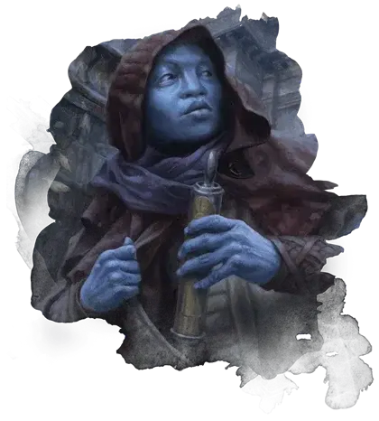

Ведалкен
Vedalken

Ничто не идеально. Ведалкены верят в это и восхваляют это. Каждое несовершенство —это шанс на улучшение, и не важно, что это —закон или наука.
Прогресс —это бесконечный поход в сторону совершенства, которого мы можем никогда не достичь. Оно побуждает ведалкенов выполнять свою работу с невероятным энтузиазмом, никогда не останавливаясь после неудачи и восхищаясь каждой возможностью для улучшения.
Хладнокровная рациональность
Ведалкены — высокие и стройные, в среднем почти на голову выше людей, однако весят столько же. Их полностью безволосая кожа имеет цвета оттенков синего, от бледно-голубого неба и яркой лазури до темного индиго, практически фиолетового. Их глаза — ещё более тёмные оттенки синего или фиолетового. У них отсутствуют внешние проявления ушей, а их нос широкий и плоский.
Как правило, ведалкены общительны в разговоре. Однако они очень приватны в том, что касается их личной жизни, поэтому они больше тянутся к идеям, чем к самим людям. Они формируют дружеские отношения на основе схожих интересов или неопределенных разногласиях. Их взаимодействия основаны на мыслях о проблемах, чем на чувствах о них. К представителям других рас ведалкены относятся холодно, практически без эмоций. Эта оценка несправедлива — они чувствуют каждый момент этих эмоций, как и другие расы, однако они обучены так, чтобы не проявлять их. Хладнокровная рациональность стоит за их действиями.
Они создают и следуют очень осторожным планам. Они достаточно терпеливы чтобы совершенно ничего не делать, если именно бездействие необходимо для приближения к идеальному результату.
Рассуждения о совершенстве
Любознательный ум и рациональность ведалкенов подталкивают их ко вступлению в сенат Азориусов, объединение Симиков и (реже) в лигу Иззетов. Вне зависимости от гильдии, они применяют свой интеллект для создания и улучшения вещей, будь то законы, процедуры или магические науки.
Ведалкены верят, что путь к недостижимой цели в лице совершенства построен на обучении, тщательном обдумывании и контролируемых экспериментах. Некоторые ведалкены стремятся улучшать самих себя, как с помощью биоинженерии Симиков так и путём старательного самообучения. Другие же фокусируются на улучшении всего общества через тщательную подготовку и принятие законов.
Имена ведалкенов
Ведалкены получают имя при рождении, однако затем они могут его поменять как знак своего совершеннолетия. Они очень редко используют фамильные имена.
Мужские имена: Аглар, Беллин, Даллид, Затаз, Йолов, Кэвин, Коплони, Ломар, Матван, Модар, Небун, Нилош, Нитт, Овлан, Отровас, Пеленер, Рилл, Тривас, Улдин, Фирелан.
Женские имена: Ази, Барвиска, Бразия, Дирелл, Грия, Зловов, Кетрилл, Ковел, Лилла, Мирела, Морай, Небресс, Оссия, Пиеренн, Роя, Сестри, Триэл, Узана, Фаин, Халия, Ярагия.
Особенности ведалкенов
Ваш персонаж-ведалкен обладает следующими особенностями.
Увеличение характеристик. Значение вашего Интеллекта увеличивается на 2, а значение Мудрости на 1.
Возраст. Ведалкены взрослеют также, как и люди. Большинство из них оседает для взрослой жизни в районе 40 лет. Их время жизни составляет около 350 – 500 лет.
Мировоззрение. Любое.
Размер. Ведалкены выше людей, но более стройные. Они 6 или 6,5 футов роста (180-195 см), однако весят меньше 200 фунтов (90 кг). Ваш размер — Средний.
Скорость. Ваша базовая скорость ходьбы составляет 30 футам.
Бесстрастие ведалкенов. Вы совершаете с преимуществом спасброски Интеллекта, Мудрости и Харизмы.
Неустанная скрупулёзность. Вы получаете владение одним из перечисленных навыков: Выступление, История, Ловкость рук, Магия, Медицина или Расследование. Вы также получаете владение одним инструментом по вашему выбору.
Каждый раз, когда вы совершаете проверку характеристики, используя выбранный навык или инструмент, добавьте к4 к результату.
Частично амфибия. Поглощая кислород через кожу, вы можете дышать под водой до 1 часа. Как только вы достигли этого предела, вы не сможете воспользоваться этой особенностью снова, пока не закончите продолжительный отдых.
Языки. Вы можете свободно говорить, писать и читать на Общем, Ведалкенском и на одном дополнительном языке по вашему выбору.